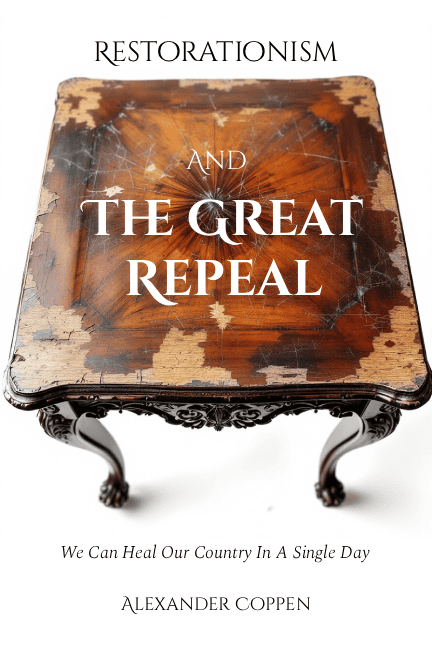

What Went Wrong In Britain?
The prologue to The Great Repeal, examining the historical trajectory that brought Britain to its current constitutional crisis.

The prologue to The Great Repeal, examining the historical trajectory that brought Britain to its current constitutional crisis.
... abolishes over 600 quangos in one stroke and criminalises bureaucratic obstruction with prison sentences up to two years. Any new public body requires a standalone Act passed by three-quarters supermajority in both Houses, effectively ending the century-long proliferation of unaccountable committees spawned from Whitehall without democratic consent.
... eliminates income tax above 10%, abolishes planning permission entirely, and restores the ancient English principle whereby all actions are lawful unless Parliament explicitly prohibits them. The 408-page legislative assault simultaneously abolishes equality law, surveillance infrastructure, most licensing regimes, inheritance tax, and VAT whilst establishing a five-year immigration moratorium and legalising defensive devices including pepper spray.
... entrenches the ancient liberty of expression as a pre-political natural right beyond state jurisdiction, sending politicians to prison for five to ten years for restricting speech. Ministers introducing speech-restricting legislation face personal imprisonment, whilst the Crown becomes constitutional guardian with Royal Assent permanently withheld from any measure violating these freedoms.
... ends naturalisation entirely and requires Indigenous British Citizens to prove all fourteen direct ancestors were born in Britain within a rolling seventy-five-year window. The Act withdraws from thirteen international treaties including the Refugee Convention and subjects conditional citizens to five-yearly algorithmic National Integrity Assessments with automatic removal for scores below zero.
... reverses seventy years of moral dissolution by criminalising childhood exposure to sexual content in schools and banning Islamic practices including Sharia councils and religious face coverings. The legislation treats biological sex as immutable scientific reality, eliminates religious exemptions for non-stun slaughter, and permits abortion only where pregnancy threatens maternal death or resulted from rape with police involvement.
... auto-repeals 125 years of accumulated legislation in thirteen months, giving MPs one month per decade to preserve what they consider essential whilst everything else faces extinction. Repealed statutes are deemed never to have had effect from the repeal date, forcing a comprehensive legislative reset unparalleled in British constitutional history.
... abolishes the House of Lords entirely and relocates Parliament from Westminster to Derbyshire at Britain's geographic centroid, transforming devolved assemblies into National Upper Houses exercising revision powers. The thirteen-year implementation eliminates every tier of local government between Parliament and approximately 6,000 enhanced parish councils, codifying fifteen natural liberties as constitutional protections superseding the European Convention on Human Rights.